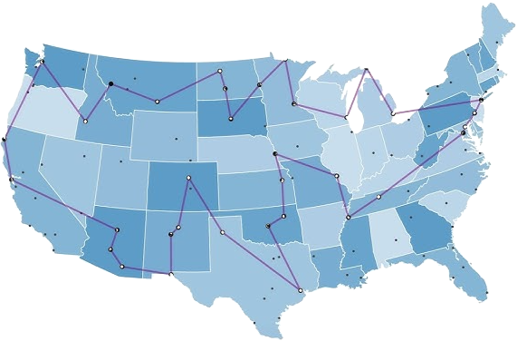

We implement a parallel branch-and-bound solver for the Travelling Salesman Problem (TSP) using tf::TaskGroup for recursive task parallelism. This example demonstrates how a combinatorial search algorithm with a dynamically growing task tree maps naturally onto Taskflow's cooperative task group model.
The Travelling Salesman Problem asks: given a set of cities and the distance between every pair of cities, what is the shortest route that visits every city exactly once and returns to the starting city?

It is one of the most studied problems in computer science and operations research. Despite its simple statement, TSP is NP-hard: no known algorithm solves it in polynomial time for arbitrary inputs. The only way to guarantee an optimal solution is exhaustive search, which explores all possible tours. For N cities there are (N-1)!/2 distinct tours, which grows astronomically: 10 cities have 181,440 tours, 15 cities have over 43 billion.
This is precisely why parallelism matters. Each branch of the search tree is independent of every other branch and can be explored on a separate CPU core simultaneously. Branch and bound makes the search tractable by pruning branches that cannot possibly improve the best solution found so far, but the remaining work is still substantial and benefits greatly from parallel execution.
Consider four cities A, B, C, D with the following symmetric distance matrix:
Starting from city A, the algorithm builds partial tours by choosing which city to visit next at each step. At each node it computes a lower bound on the best possible completion of the current partial tour. If the lower bound is greater than or equal to the best complete tour found so far, the entire subtree rooted at that node is pruned — there is no point exploring it further. The lower bound used here is:
This is a valid lower bound because any completion of the tour must include at least one edge out of the current city and at least one edge incident to each unvisited city. The figure below shows the full search tree for this 4-city instance. Peach nodes are explored, red nodes are pruned (their lower bound already exceeds the best known cost), and the green node is the optimal tour:
The algorithm finds A->B->C->D->A with cost 95 first, then improves to A->B->D->C->A with cost 80 (the optimum). With best_cost equal to 80 established, all four remaining branches are pruned because their lower bounds of 80 or 95 cannot improve on 80. Only 5 of the 9 possible interior nodes are actually evaluated.
We represent the distance matrix as a flat vector and implement the branch-and-bound search as a recursive function. Each recursive call creates a tf::TaskGroup to spawn one async task per unvisited city (the "include this city next" branch) while computing one branch directly on the current worker. After spawning, tg.corun() cooperatively waits for all spawned branches to complete without blocking the worker thread.
A global std::atomic<int> tracks the best tour cost found so far. Any branch whose lower bound is at or above this value is pruned immediately by returning without spawning children. When a better complete tour is found, the atomic is updated with compare_exchange_weak so that all workers immediately see the tighter bound on their next pruning check.
The program output is:
which corresponds to the tour A->B->D->C->A.
There are a few important design points worth noting for this example, which also apply generally to parallel search algorithms:
branch_and_bound creates its own tg via executor.task_group(). This is valid because every invocation runs inside a worker thread of the executor — either as the root executor.async task or as a tg.silent_async task spawned by a parent invocation. Attempting to call executor.task_group() from outside a worker thread throws an exception.tg.silent_async.best_cost for pruning: All workers share a single std::atomic<int> best_cost. When any worker finds a better complete tour, it updates best_cost with compare_exchange_weak so that all other workers immediately see the tighter bound on their next pruning check. This is the key mechanism that makes parallel branch and bound more efficient than running independent serial searches: workers continuously share information about the best solution found so far, tightening the pruning bound for the entire parallel search.tg.corun() does not block the calling worker thread. Instead, the worker participates in the executor's work-stealing loop, executing other tasks while waiting for its spawned branches to complete. This prevents worker starvation when the search tree is deep and avoids the deadlock that would result from a blocking wait inside an executor worker.visited vector copy on each recursive call becomes a bottleneck. A bitmask (uint32_t or uint64_t) is more efficient for up to 32 or 64 cities respectively. For production TSP solvers, more sophisticated bounding functions such as the Held-Karp lower bound or minimum spanning tree bound deliver much tighter pruning and dramatically reduce the search tree size.